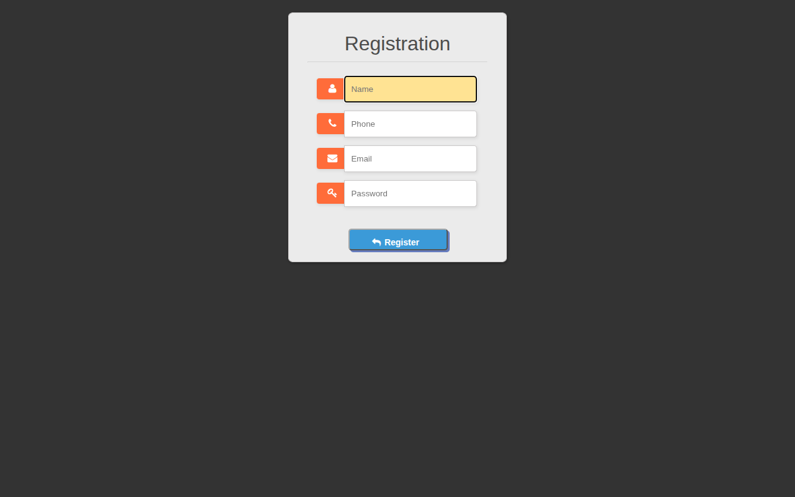
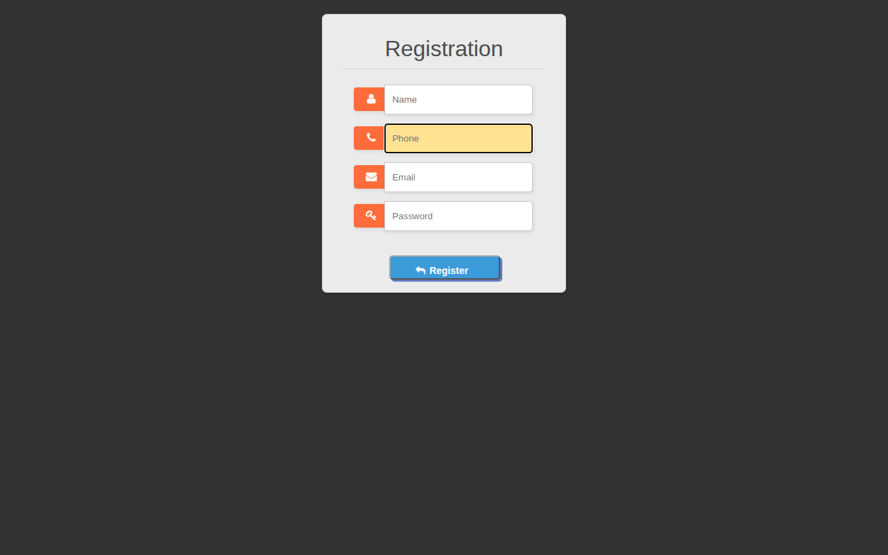
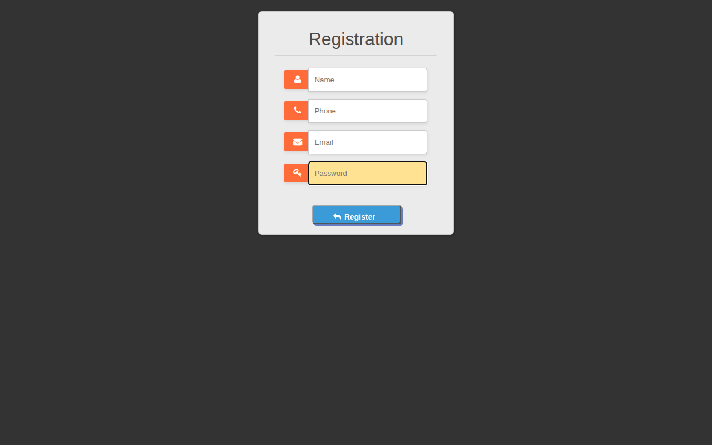
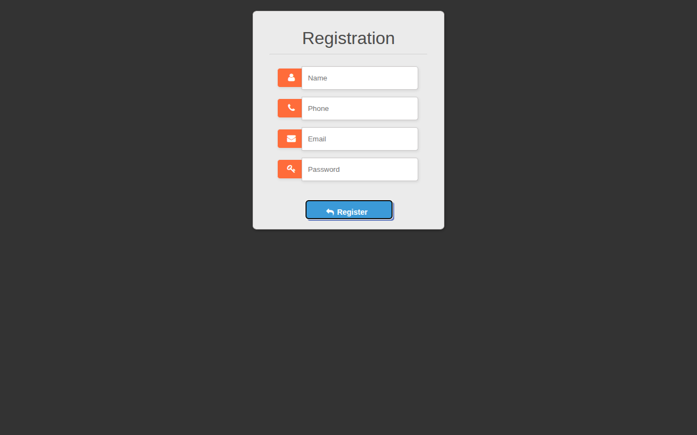

Ảnh minh chứng Exercise 9.7
Mở bài thực hành
·
Về Lab09

Focus vào trường name: nền vàng #FFE393; trường trước đó trở về trắng khi blur.

Focus vào trường phone: nền vàng #FFE393; trường trước đó trở về trắng khi blur.
Focus vào trường email: nền vàng #FFE393; trường trước đó trở về trắng khi blur.

Focus vào trường pass: nền vàng #FFE393; trường trước đó trở về trắng khi blur.

Tab sang nút Register: cả bốn trường đã blur và có nền trắng.